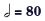
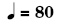
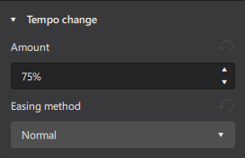
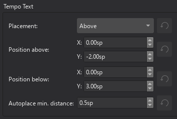

Tempo markings
Overview
The musical terminology tempo means the speed or pace of a composition. Musicians use tempo markings/marks to indicate tempo. Supported tempo markings include:
- Metronome marks: Consists of a note, an equals sign, and a whole number.

indicates 80 minims (half note) per minute.

indicates 80 quarter notes (crotchets) per minute. * Verbal tempo indications: Andante, Allegro, "a tempo", "tempo primo" etc. * Tempo change lines: Consists of a text and a dashed line. Includes "accel.", "allarg.", "rall.", and "rit.". * Metric modulations:

Musescore's synthesizer paces based on two settings:
- The real, written tempo of score. It is only determined by tempo markings on the score. Section breaks and barlines do not reset anything. If no tempo marking is present on a score, it plays as if ♩ = 120 is used (120 crotchets or quarter notes in one minute).
- The control slider that change pace temporarily, intended for monitoring purpose. See Playback panel chapter.
Musicians use tempo markings to indicate the value of one beat, but Musescore does not use the beat information inside tempo markings. Beat information is obtained from Time signatures only.
Tempo markings are Musescore Text, except tempo change lines are Musescore Line that contains Text, see Text and Other lines chapter.
The Properties palette and Playback panel use a special unit "BPM". "BPM" is the amount of quarter notes would have been within one minute in decimal number. It is not related to the musical beat. It is not the whole number used in metronome marks conventionally, or on the score.
Using Metronome marks and Metric modulations
Playback follows written content by default only when note and augmentation dot professional glyphs are used. User can also use an overriding setting.
Using Tempo change lines
The tempo changes along the object's anchored range, see Other lines chapter.
Musescore does not understand the written content. These items have pre-defined tempo setting. In Musescore 4.2 beta's Tempo palette, by default:
- accel.: Gradually speeds up to 133% of the original tempo
- allarg.: Gradually slows down to 75% of the original tempo. The italian allargando means widen.
- rall.: Gradually slows down to 75% of the original tempo
- rit.: Gradually slows down to 75% of the original tempo
The setting is changable, see "Changing playback" section.
Using Verbal tempo indications
Musescore does not understand the written content. In Musescore 4.2 beta's Tempo palette, by default:
- "a tempo" item: Changes tempo back the latest tempo before any change by tempo change lines.
- tempo primo item: Changes tempo back to that indicated by the first valid marking.
- Other verbal tempo indication items have pre-defined tempo setting.
All of these settings are changable, see "Changing playback" section.
Adding tempo marks to your score
All markings are found in the Tempo palette, see Using the palettes chapter.
Tempo markings affect playback of all staves on a score.
New Tempo change line is positioned on top of a staff, like Staff Text does. It only appears in the "FullScore" and the "Part" that features the staff. All other new tempo markings are positioned on top of system, like System Text does. System is a layout term, see Page layout concepts chapter).
To add a Metronome mark, Verbal tempo indication, or Metric modulation onto the score, use one of the following methods:
- Select a note/rest and click an item in a palette.
- Drag the item from a palette onto a note/rest.
- From the menu bar, select Add→Text, and click on Tempo marking.
- See also External links for alternative method utilising a 3rd-party font.
To add a Metronome mark that use a suitable note value by using the beat information from the time signature:
- Select a note/rest and press the keyboard shortcut
Alt+Shift+T.
To add a Tempo change line, use the methods explained in the Other lines: apply line chapter. One common method is to add it to a selected range:
- Either * Select a note or rest, for creation of Tempo object with "Stave Text Line" behaviour, or * Select a bar for creation of Tempo object with "System Text Line" behaviour;
Shift+Click the last.- Click an item in the palette.
Changing appearance
Playback can be configured to follow written content of Metronome mark and Metric modulation. Musescore only understand note and augmentation dot professional glyphs. Do not copy or use unicode characters from other programs or the internet. The augmentation dot is not a "Full stop / period" on the computer keyboard.
Other characters and numbers are plain characters, entered using (typing on) a computer keyboard. They have different formatting behaviours, for example changing the Properties panel:Font does not affect glyphs, see musescore 3 handbook Fonts chapter. See also Entering and editing text chapter.
Adding plain characters
- Select an object.
- Enter edit mode (double click)
- Type text.
Adding professional glyphs
- Select an object.
- Enter edit mode (double click).
- Use Special characters window: Common symbols tab, one way to open the window is
Shift+F2
Tempo change lines
Tempo change lines are Musescore Line. To change appearence of the dashed line, see Other lines: line properties and Adjusting elements directly: Changing the range of a line chapters.
Changing playback
Metronome mark, Metric modulation, and Verbal tempo indication
To change the predefined tempo setting:
- Select object(s)
- Open the Properties palette
- Under Tempo section
- Enter a value in Override written tempo, this value use the special BPM unit, see Overview.
To assign a manual / overriding tempo setting:
- Select object(s)
- Open the Properties palette
- Under Tempo or A Tempo or Tempo primo section, click to change: * Follow written tempo : uncheck to ignore written content on the score * Set specific tempo : check to ignore written content on the score
- Enter a value in Override written tempo, this value use the special BPM unit, see Overview.
Tempo change line

To change the manual tempo setting:
- Select object(s)
- Open the Properties palette
- Click Playback, change any if required:
* Amount: Target tempo as a percentage of original tempo. 100% means no change.
* Easing Methods: Rate of tempo change, options are
- Normal : a linear transition effect with the same rate of change from start to end
- Ease in : a transition effect with a slow change rate at the start but a quicker change rate at the end
- Ease out : a transition effect with a quick change rate at the start but a slow change rate at the end
Tempo change lines are Musescore Line. The tempo changes along the object's anchored range. To change the range, see Other lines: line properties and Adjusting elements directly: Changing the range of a line chapters.
Repeating tempo markings on other staves
A tempo marking's layout and default positioning depends on how it is added, see "Adding tempo marks to your score" section.
For tempo markings that behave like "System Text" or "System Text Line", there is a special method to mirror the object, see Staff Text, System Text and Expression Text: Repeating System Text on other staves chapter.
Tempo properties
Selected tempo markings(s) on a score can be edited with Properties panel, settings are already covered in other sections of this chapter. The Properties panel: Font property affects plain characters, but not the professional glyphs. Professional glyphs use "Musical symbols font", see "Tempo style" section. Text related settings are covered in Formatting text chapter. Line related settings are covered in Other lines chapter.
To edit the score-wide settings, see "Tempo style" section.
Tempo style
See main chapter Templates and styles
- Values of the "Musical symbols font" can be edited in Format→Style→Score.
- Values of the "Style for Tempo text" can be edited in Format→Style→Tempo text.
- Values of the "Style for text inside Tempo" can be edited in Format→Style→Text styles→Tempo
- Values of the "Style for text inside Gradual Tempo Change" can be edited in Format→Style→Text styles→Gradual Tempo Change
- Values of the "Style for text Metronome" can be edited in Format→Style→Text styles→Metronome. No object uses this profile by default, its purpose is for styling Tempo markings which have both a verbal indication part and a metronome mark part. Often the metronome mark part is non-bold and a little smaller. Source: https://github.com/musescore/MuseScore/issues/13377#issuecomment-147399…

External links
- github "a tempo" https://github.com/musescore/MuseScore/pull/15563
- create advanced metric modulation text with "Metrico" font by Florian Kretlow, PSA: If you want to write complex metric modulations, check out this awesome font Florian Kretlow made!